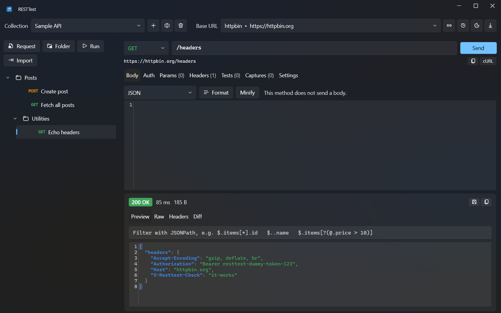

Requests
Method, path, query parameters and headers (each row can be switched off), and a live preview of the final URL. :id path segments get their own parameter table.
RESTTest is a free desktop REST client for Windows. No account, no sign-in, no cloud sync: your collections are plain JSON files in your profile. Send requests, check responses, chain a login into the calls after it, and run a whole collection as a test suite.
Windows 10 or 11, 64-bit. Installer or portable zip. No .NET install needed.

In most REST clients every request carries its own host, or a {{baseUrl}}
variable you have to remember to use. In RESTTest a collection holds a short list of named
base URLs, such as Local, Staging and Production, and every request stores only a method
and a path. Pick another base URL in the toolbar and the whole collection points at it.
Nothing to edit per request, no template syntax to learn.
Method, path, query parameters and headers (each row can be switched off), and a live preview of the final URL. :id path segments get their own parameter table.
JSON with highlighting, bracket matching, search, Format and Minify. Also text, XML, URL-encoded forms and multipart with file uploads.
Bearer token, Basic, and API key as a header or a query parameter.
Colour-coded status, time and size, pretty preview with a JSONPath filter, raw body and headers. Binary responses save to disk byte for byte.
Checks on status, response time, headers, JSON paths and body text after every send. Run a folder or a whole collection and get a pass or fail report.
Capture a token or an id from one response and use it in later requests, by name, with no template syntax. Runs pass captured values forward.
Compare a response with the previous one or a pinned baseline. Every send is kept in a searchable history you can save back as a request.
A cookie jar keeps and replays cookies between requests, like a browser, and you can inspect or clear it.
Import Postman v2, Insomnia v4 and OpenAPI 3 or Swagger 2 (JSON). Paste a cURL command as a request, or copy any request as cURL.
Timeout, follow redirects, and certificate checking per request. Self-signed certificates on localhost just work.
Download RESTTest-version-setup-x64.exe from the latest release and run it. It installs for your user only (no administrator prompt), adds a Start menu entry and can be removed from Settings, Apps. Installing a newer version upgrades in place.
Prefer no installer? Download RESTTest-version-portable-x64.zip,
unzip it anywhere and run RESTTest.exe.
Windows SmartScreen may warn you. The installer is not code-signed, so Windows can show "Windows protected your PC". Choose More info, then Run anyway. Each release lists SHA-256 checksums if you want to verify the file first.
Everything is stored under %APPDATA%\RestTest: one readable JSON file per
collection, plus history, cookies and settings. Uninstalling leaves these files in place.
Tokens, passwords and captured values are saved as plain text, so don't share collection
files that hold real secrets.